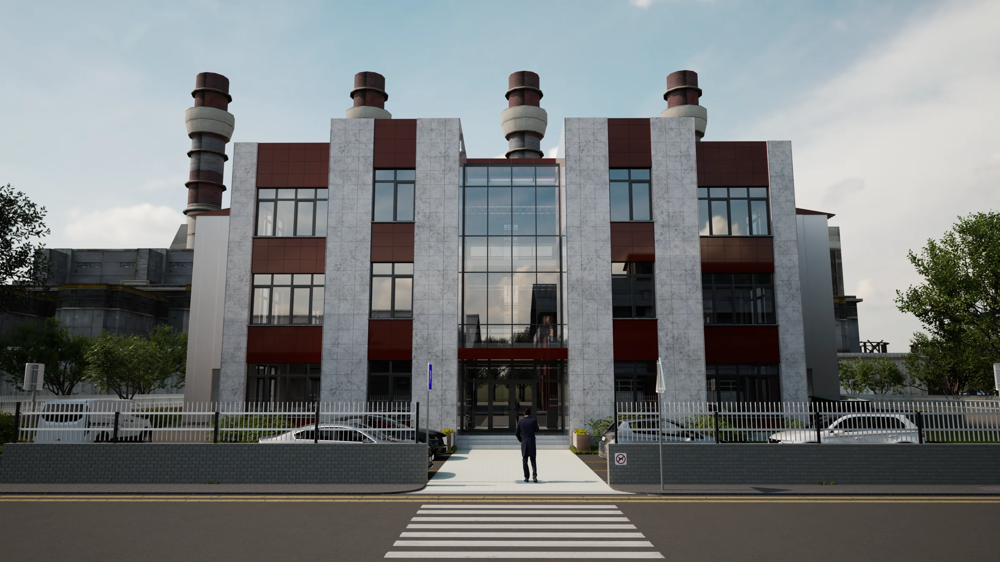
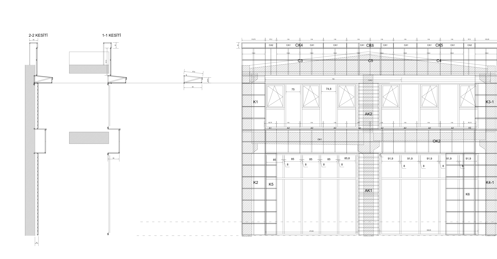
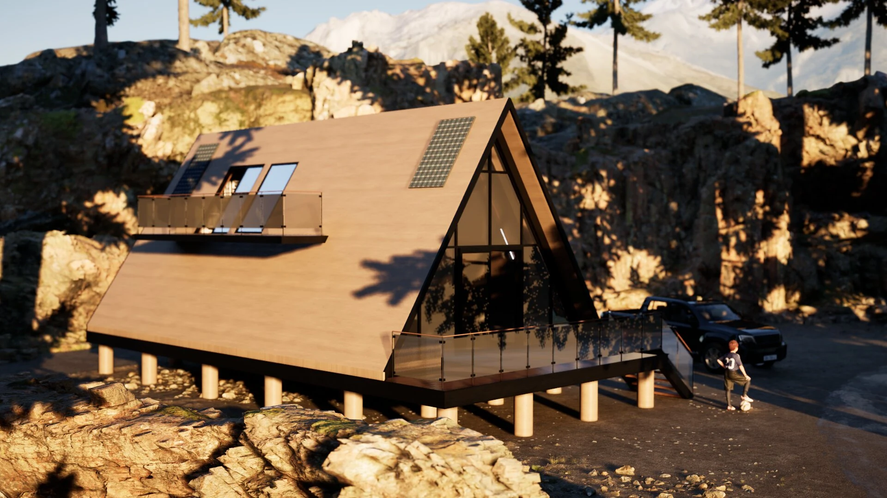
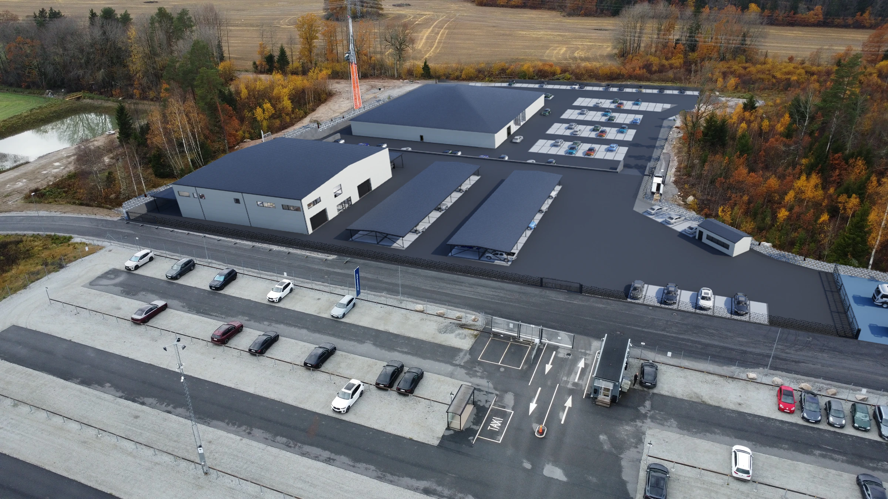

01Mimari tasarım · BIM · Film
Axis Works
Endüstriyel bir yapının kimliğini; cephe ritmi, malzeme dengesi ve güçlü bir giriş aksı üzerinden araştıran bütüncül bir mimari çalışma.
Projeyi inceleHY ARCHWORKS / ARCHITECTURE & DETAIL
Tasarla. Çöz. Görselleştir.
Harekete geçir.
Alüminyum doğrama, giydirme cephe, çelik alt konstrüksiyon ve kompozit kaplama. Rölöve, detay, Logikal, metraj ve saha deneyimini bir araya getiren teknik üretim.
Cephe & alüminyum dosyasını incele ↗
RÖLÖVE → DETAY → İMALATTasarım fikrini teknik bilgiyle geliştiriyor, mimariyi etkileyici görseller ve hareketli sunumlarla anlatıyorum. Her projede form, malzeme, detay ve atmosfer birlikte çalışıyor.

01Endüstriyel bir yapının kimliğini; cephe ritmi, malzeme dengesi ve güçlü bir giriş aksı üzerinden araştıran bütüncül bir mimari çalışma.
Projeyi incele
02Kayalık bir peyzaj içinde; yapı, arazi ve atmosferin birlikte tasarlandığı kompakt bir kaçış mekânı.
Projeyi incele
03İsveç’teki bir araç yenileme merkezi için hazırlanan; genel yerleşimi, yapıların ilişkisini ve iç mekânları bir araya getiren ticari görselleştirme çalışması.
Projeyi inceleÖzgün uygulama dosyalarından ölçülü planlar, bina kesitleri, cepheler ve yapı detayları. Farklı projelerde tasarımın uygulamaya dönüşen çizgileri.
KONUT / UYGULAMA · Aksiyal Mimarlık
A BLOK · Derin Proje
KONUT / UYGULAMA · Aksiyal Mimarlık
BYAPI / BİSE MİMARLIK
27 teknik örnek · DWG ve Logikal · Plan, kesit, görünüş ve detay
Teknik arşivi aç ↗Aksiyal ve BYAPI / BİSE MİMARLIK arşivlerinden; mobilya, malzeme ve mekân ilişkilerini anlatan kat planları.

Mimari tasarımı, teknik üretimi ve görsel anlatımı aynı süreçte birleştiren bir mimarım.
Mimarlık ofislerinde uygulama projeleri ve BIM/CAD üretimiyle; cephe ve alüminyum sistemlerinde ise detay, imalat çizimleri, metraj ve saha koordinasyonuyla deneyim kazandım. Bu altyapı, bir görselin arkasındaki yapıyı ve yapım mantığını düşünme biçimimi şekillendiriyor.
HY Archworks çatısı altında mimari modelleme, görselleştirme ve animasyon üretiyorum. Konsept projelerden uluslararası müşteri çalışmalarına kadar hedefim; mekânı anlaşılır, tutarlı ve etkileyici bir dille sunmak.
“Tasarla. Çöz. Görselleştir.
Harekete geçir.”
Revit · AutoCAD · SketchUp
İmalat çizimleri · Metraj · Saha
Twinmotion · Unreal Engine · Adobe
Mimarlık, cephe üretimi ve görsel iletişim üzerine kurulu bir mesleki birikim.
Mimarlık Lisans · 2017–2021
Yeni Nesil Kültürel Mekânlar için İçerik Geliştirme
Şantiye şefliği · Uygulama projeleri · Depo, tedarik ve stok yönetimi
Bağımsız mimar · Görselleştirme ve animasyon
Cephe tasarımı, imalat çizimleri ve saha koordinasyonu
Mimari tasarım, uygulama projeleri ve sunum
Alüminyum sistemleri, metraj ve görselleştirme
Uygulama projeleri, hesaplar ve 3B modelleme
Proje üretimi, modelleme ve görselleştirme